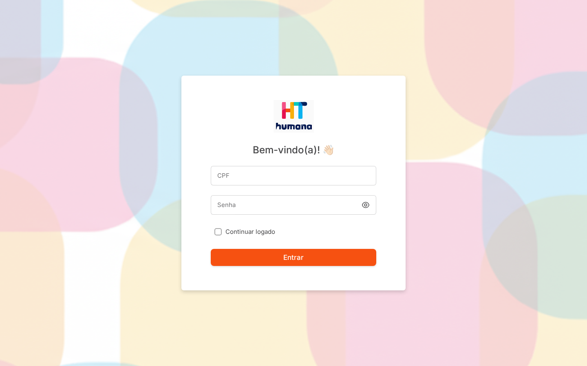
Autenticação por CPF
Campo com máscara automática (###.###.###-##) que formata o número enquanto o usuário digita, garantindo a entrada correta sem esforço extra e evitando erros de formato.
Senha com visibilidade controlada
Ícone de olho no campo de senha para alternar entre ocultar e mostrar o que foi digitado — elimina erros de digitação sem comprometer a segurança do acesso.
Continuar logado
Checkbox que persiste a sessão no navegador, evitando que o usuário precise redigitar as credenciais a cada visita — ideal para uso no computador do trabalho.
Proteção de rotas
Todas as páginas do sistema verificam autenticação. Tentativas de acesso direto por URL sem sessão ativa redirecionam automaticamente ao login.
Feedback claro de erros
Mensagens objetivas em caso de credenciais inválidas ou conta inativa, orientando o usuário sem expor informações técnicas ou de segurança do sistema.
Expiração automática de sessão
Tokens JWT com validade configurável. Ao expirar, o sistema encerra a sessão e solicita novo login — protegendo contas em dispositivos compartilhados.
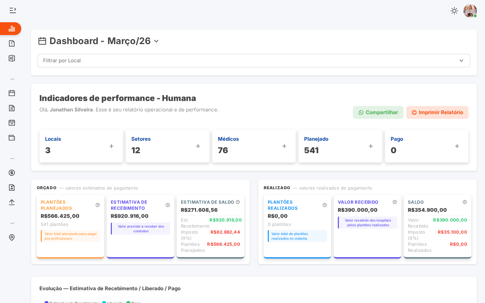
Planejado — baseline da operação
Total de plantões e valor financeiro previstos. É a referência central contra a qual todos os outros indicadores são medidos e comparados percentualmente.
Realizado — execução confirmada
Plantões efetivamente cumpridos com percentual de aderência ao planejamento. Indica diretamente a eficiência operacional da escala no período.
Liberado — aprovado para pagamento
Valor que passou pela validação do fechamento e está aprovado. Representa o que já pode ser processado financeiramente sem necessidade de ação adicional.
Pago — desembolso confirmado
Total efetivamente desembolsado aos profissionais. Estágio final do ciclo financeiro e referência de execução orçamentária para qualquer período.
Faturado — receita do período
Valor faturado à instituição contratante. Permite cruzar receita com despesa para calcular a margem operacional bruta da operação.
Saldo — balanço do período
Diferença entre contratado e realizado. Saldo positivo indica subexecução; negativo indica extrapolação do planejamento — ambos geram alertas de gestão.
Filtro de competência
Seletor de mês e ano que atualiza simultaneamente todos os indicadores, cards e gráficos da tela. Permite navegar por qualquer período histórico sem sair do painel.
Compartilhar via WhatsApp
Envio do relatório do período diretamente por WhatsApp com um único clique — agiliza a comunicação com gestores, diretores e equipes externas.
Impressão do relatório
Formata o painel para impressão em papel ou geração de PDF — com layout otimizado que remove elementos de navegação e preserva gráficos e tabelas.
Gráficos interativos
Visualizações evolutivas dos indicadores com ApexCharts — permitem identificar tendências, picos e quedas ao longo do mês com hover para detalhes de cada ponto.
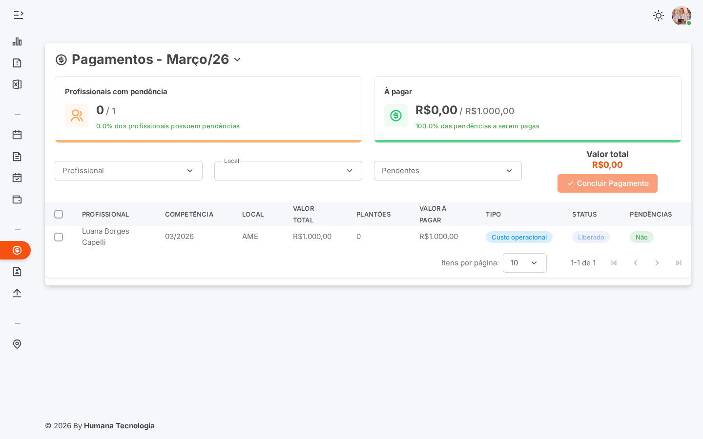
Cards de resumo executivo
Destaques no topo da tela com: quantidade de profissionais com pagamento pendente e percentual sobre o total; valor total a pagar versus valor em aberto — visão instantânea do passivo financeiro.
Filtro por profissional
Autocomplete que busca simultaneamente por nome e CRM — localiza qualquer profissional com poucos caracteres, mesmo em bases com centenas de registros.
Filtro por local
Seleção de instituição para segmentar pagamentos por unidade. Essencial para operações multissite onde cada local tem gestores diferentes.
Filtro por pendência
Exibe apenas profissionais com pendências abertas (dados bancários incompletos, documentação faltando etc.), agilizando a resolução antes do processamento.
Filtro de competência
Visualize pagamentos de qualquer período histórico — não apenas o mês atual. Essencial para reprocessamentos, auditorias e consultas retroativas.
Seleção múltipla e lote
Checkboxes individuais por linha com botão "Concluir Pagamentos" que processa todos os selecionados de uma só vez, registrando a data exata via seletor de calendário.
Chips de tipo
Cada linha exibe apenas o tipo do pagamento, com cores distintas: Folha de ponto ou Custo operacional — não há chips de status nesta listagem.
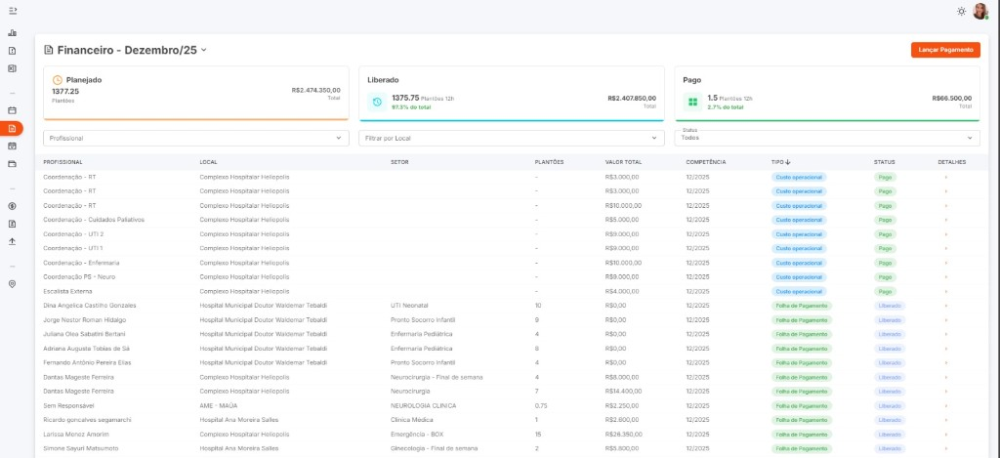
Indicadores no topo
Três cards fixos com: plantões planejados e valor total; quantidade e percentual dos liberados; quantidade e percentual dos pagos — atualizam conforme os filtros aplicados.
Filtros avançados
Combinação de profissional (autocomplete), local hierárquico (instituição → setor), status (Todos / Liberado / Pago / Parcialmente pago) e competência.
Lançamento de custo operacional
Modal "Lançar Pagamento" para registrar despesas avulsas: beneficiário (profissional cadastrado ou nome externo), valor em R$, data, local e descrição livre.
Exclusão de Custos Operacionais
Cada custo operacional pode ser excluído individualmente com confirmação obrigatória — mantendo a integridade e o histórico financeiro auditável.
Detalhes de custos operacionais
Modal dedicado para visualizar todos os campos de cada custo lançado: data, valor, responsável pelo lançamento e justificativa.
Separação contábil por tipo
Chips distintos para Custo operacional e Folha de ponto em cada linha, facilitando a separação contábil e a conciliação com o sistema de gestão financeira.
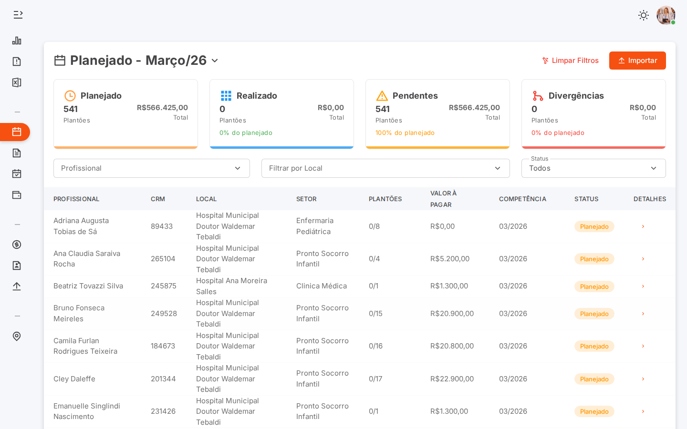
Planejado — baseline
Total de plantões e valor financeiro previstos para o período. Referência central para todos os demais indicadores do módulo.
Realizado — execução confirmada
Quantidade de plantões confirmados e percentual de aderência ao planejamento. Reflete diretamente a eficiência da escala no período.
Pendentes — aguardando ação
Plantões planejados que ainda não foram confirmados como realizados nem marcados como cancelados. Cada item requer resolução pela equipe.
Divergências — inconsistências
Contradições entre planejamento e dados de fechamento importados. Cada divergência é listada individualmente para resolução manual pelo gestor.
Importação de relatório do Pega Plantão
O upload utiliza o arquivo financeiro exportado do Pega Plantão (Excel ou CSV): o sistema processa automaticamente, cruza com o planejamento e alimenta os dados sem digitação manual — é o formato nativo esperado dessa integração.
Detalhamento por linha
Expansão de cada registro para visualizar: CRM, local, setor, valor a pagar, competência e status atual — sem precisar sair da tela.
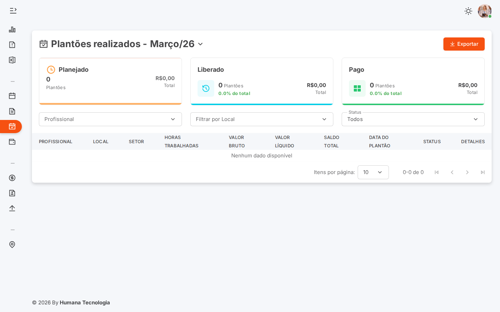
Cards de indicadores
Totais de Planejados, Liberados (com %) e Pagos (com %) para o período filtrado — contexto imediato para o volume de dados exibido na tabela.
Valores brutos e líquidos
Para cada plantão: valor bruto contratado e valor líquido após descontos aplicáveis — permitindo auditoria completa da composição dos valores pagos.
Saldo acumulado
Coluna que consolida, por profissional no período, o saldo calculado como valor bruto menos valor líquido (Bruto − Líquido). Esse saldo representa o que a empresa retém e lucra sobre cada plantão — a margem da operação em relação ao valor pago ao profissional.
Horas trabalhadas
Carga horária de cada plantão em horas, facilitando o controle de jornada e o cálculo de banco de horas quando aplicável ao contrato.
Exportação para Excel
Gera arquivo XLSX completo com todos os plantões do período: profissional, local, setor, datas, horas, valores e status — pronto para análise contábil ou conciliação.
Filtros completos
Combinação de profissional (autocomplete), local hierárquico, status e competência — isolando exatamente o conjunto de dados necessário para cada análise.
Profissional · Local · Setor · Horas trabalhadas · Valor bruto · Valor líquido · Saldo total · Data do plantão · Status
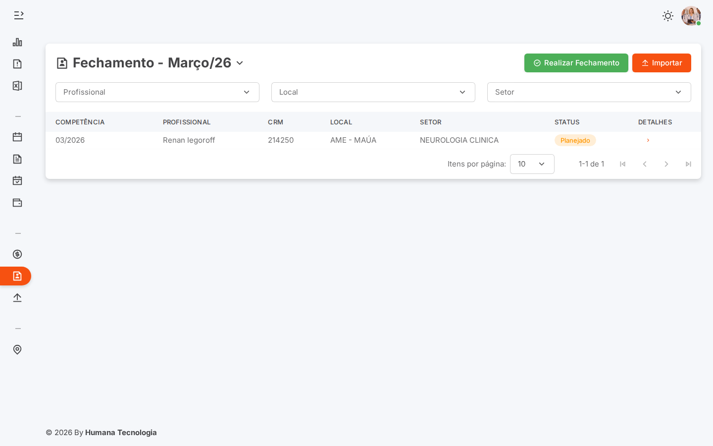
O cálculo automático no fechamento entra em destaque para profissionais com valores diferenciados conforme a quantidade de consultas (atendimentos) realizados no período: nesses casos, o sistema usa o volume de consultas informado no fluxo para apurar o valor devido, sem recálculo manual linha a linha.
Lista com status coloridos
Tabela de todos os registros de fechamento com competência, profissional, CRM, local, setor e status atual em chips coloridos — visão rápida do estado de cada registro.
Filtros de navegação
Profissional, local, setor e competência (mês/ano) — localiza rapidamente registros específicos em operações com grande volume de profissionais e locais cadastrados.
Importação em lote da folha de ponto
Modal onde o responsável seleciona local e setor e faz upload de múltiplos arquivos simultaneamente (JPG, JPEG, PDF sem limite de quantidade). Processamento assíncrono no servidor.
Realizar fechamento mensal
Fluxo guiado: seleção de local/setor → quantidade de atendimentos → confirmação do valor base → seleção da competência. O sistema exibe automaticamente os plantões previstos para conferência antes de confirmar.
Detalhes por registro
Acesso aos dados completos de cada fechamento: datas, valores calculados, profissional responsável e histórico de mudanças de status.
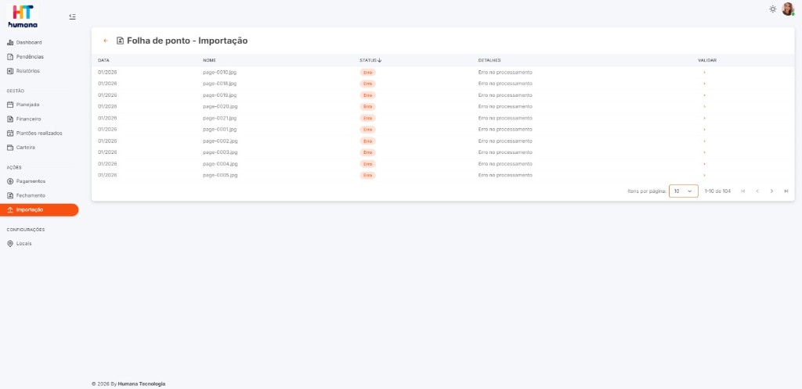
Histórico completo
Todas as importações aparecem na lista — incluindo as que ainda não foram processadas — sempre com data e hora do envio, nome do arquivo e status, da mais recente para a mais antiga, para acompanhar fila e erros em tempo real.
Em processamento
Indica importações que ainda não foram processadas, acompanhadas da data e hora do envio.
Diagnóstico de erros
Arquivos com falha exibem o tipo de erro (processamento, leitura de dados etc.) e mensagem explicativa para orientar a correção e o reenvio do arquivo.
Validar detalhes
Botão em cada linha para acessar os detalhes completos da importação: dados extraídos, campos com erro e observações do sistema de processamento.
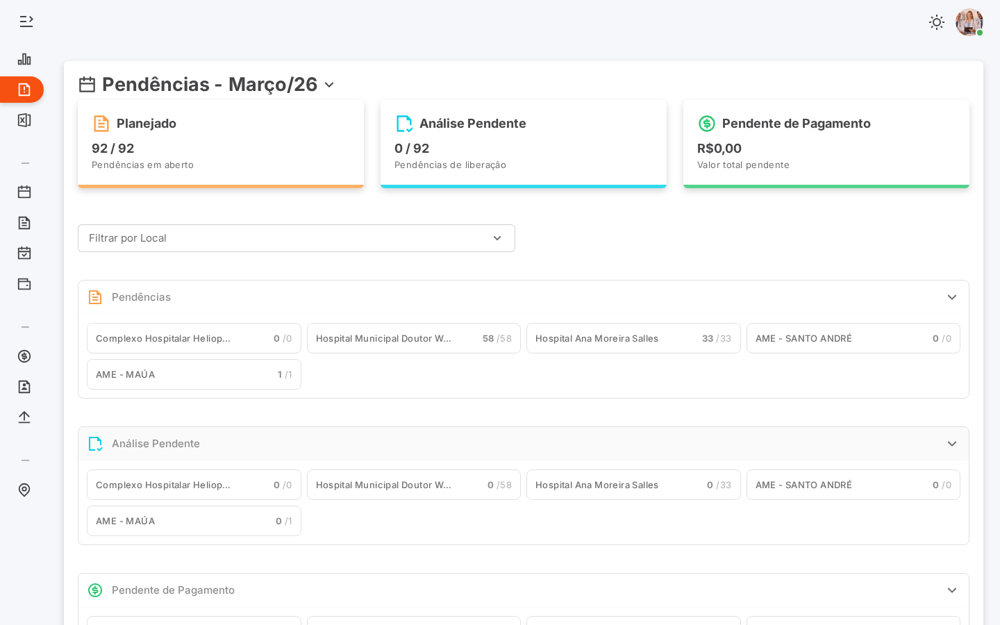
Pendências de plantão
Plantões do planejamento sem confirmação de execução nem fechamento associado. Cada item representa um plantão que precisa ser validado (confirmado ou cancelado) pela equipe.
Análise pendente (liberação)
Registros que passaram pelo fechamento mas aguardam análise e aprovação do gestor para liberação do pagamento — o gargalo mais comum do ciclo financeiro.
Pendente de pagamento
Liberados e aprovados mas sem pagamento confirmado. Itens prontos para processamento financeiro imediato — nenhuma ação de validação é necessária.
Barras de progresso
Visualização percentual do andamento de cada categoria — permite avaliar instantaneamente a saúde operacional e priorizar onde atuar primeiro.
Filtro hierárquico
Seleção de instituição e setor para focar a análise em uma unidade específica, reduzindo ruído em operações com múltiplas unidades e gestores diferentes.
Drill-down por profissional
Expanda qualquer seção para ver a lista detalhada de profissionais com pendências naquela categoria, com valores, datas e informações de contato.
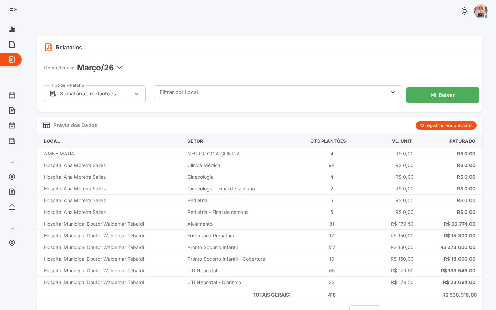
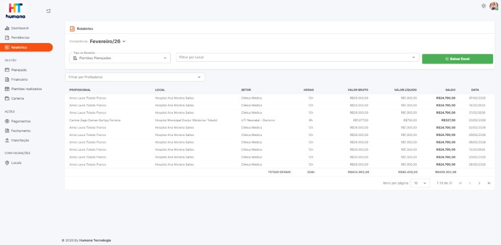
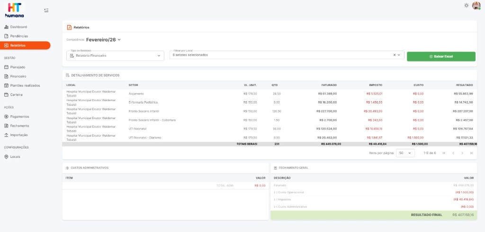
Três tipos no mesmo lugar
O menu Tipo de relatório alterna entre Somatória de Plantões, Plantões planejados e Relatório financeiro — sem sair da tela.
Competência única
O período (mês/ano) vale para os três relatórios; troque o tipo e mantenha o mesmo recorte temporal.
Filtro por local
Seleção de instituição e setores para restringir o conjunto exibido e exportado.
Baixar Excel
Exportação do relatório visível no momento, respeitando competência e filtros aplicados.
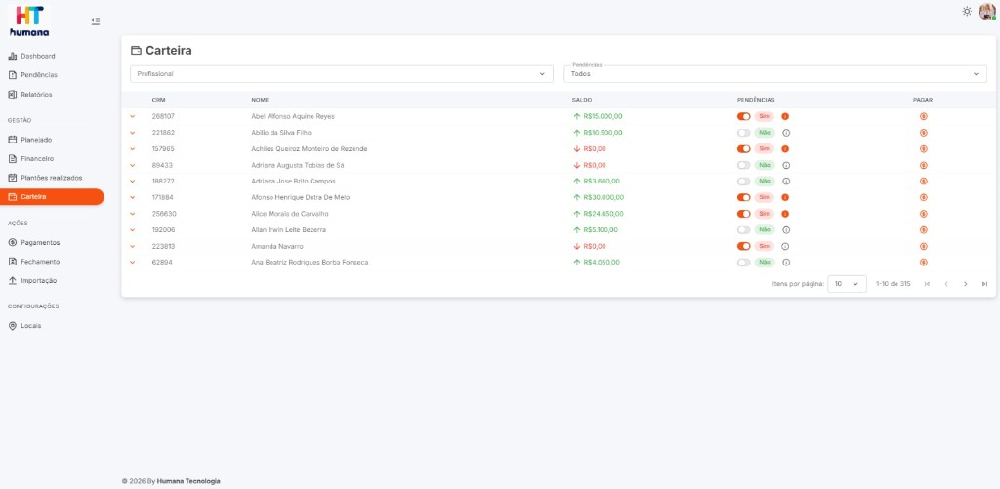
Saldo atual em destaque
Coluna de saldo calculado automaticamente a partir do histórico completo de transações — mostra de forma imediata o valor disponível ou devedor de cada profissional.
Indicador de pendências
Flag Sim/Não visível diretamente na listagem, com filtro dedicado para exibir apenas profissionais com pendências abertas.
Extrato completo
Expansão de linha com cada transação em ordem cronológica: data, descrição, tipo (crédito/débito/desconto) e valor individual — histórico auditável de todas as movimentações.
Pagamento direto
Botão "Pagar" abre modal para efetuar pagamento ao profissional com registro imediato na carteira — sem precisar sair da plataforma ou usar sistemas externos.
Observações de pendência
Campo editável para documentar o motivo de uma pendência, a tratativa em andamento ou qualquer informação relevante para o time de gestão financeira.
Filtros de busca
Autocomplete por nome do profissional e filtro por situação de pendência — agilizando a navegação mesmo em bases com centenas de profissionais cadastrados.
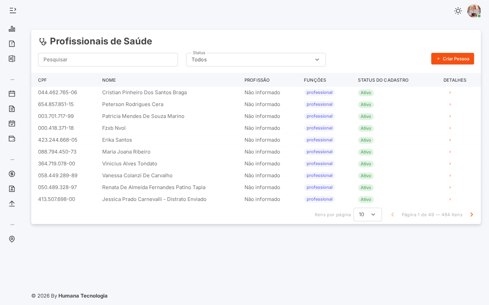
Busca em tempo real
Campo de pesquisa por nome com resultado imediato e filtro de status (Todos / Pendente / Ativo). Paginação configurável: 5, 10, 20 ou 50 itens por página com indicador de posição.
Criar profissional
Modal de cadastro rápido com nome completo, CPF (máscara + validação), celular e e-mail. Após criar, o perfil completo é preenchido na tela de detalhes por abas.
Funções visíveis na lista
Chips coloridos com os papéis (roles) de cada profissional diretamente na listagem — sem precisar abrir o detalhe para saber o perfil de acesso.
Status de cadastro
Indicação visual do estágio do cadastro: Ativo (verde) ou Pendente (laranja) — identifica imediatamente quem ainda precisa completar informações obrigatórias.

| Aba | O que é gerenciado |
|---|---|
| Dados Pessoais | Nome completo, e-mail, telefone (máscara + validação 10-11 dígitos), CPF, senha de acesso e data de nascimento com validações em tempo real. |
| Dados Complementares | Estado civil, naturalidade, nacionalidade, nome da mãe e do pai, deficiência (tipo e grau), gênero, sexo e raça/cor — campos exigidos pelo eSocial e formulários hospitalares. |
| Endereço | CEP com autopreenchimento automático via API (preenche logradouro, bairro, cidade e UF), número, complemento e estado — reduz erros e tempo de cadastro. |
| Contas Bancárias | Tipo (corrente/poupança), número, dígito verificador, agência, banco e código bancário. Múltiplas contas com flag de conta principal. CRUD completo com confirmação de exclusão. |
| Chaves Pix | Todos os tipos: CPF, e-mail, telefone, chave DICT e aleatória. Flags de chave ativa e principal. CRUD completo — cadastre, edite e remova chaves sem limitação de quantidade. |
Especialidades (CBO)
Cadastro de profissão e especialidade baseado na Classificação Brasileira de Ocupações, com flag de especialidade principal. CRUD completo com validação de duplicidade.
Registro profissional (CRM)
Número do CRM, estado de registro (UF) e data de emissão. Suporta múltiplos CRMs por profissional (registros em diferentes estados) com upload de documento comprobatório.
Documentos vinculados ao CRM
Upload de arquivo diretamente vinculado ao registro profissional — armazenado em AWS S3 com acesso seguro e visualização integrada sem download.
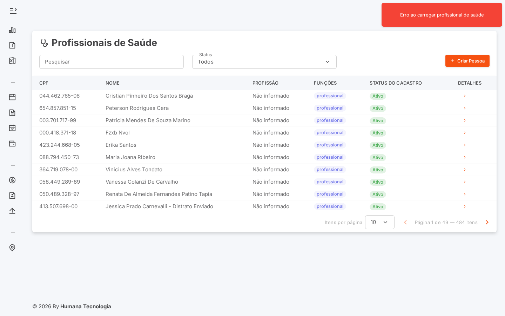
RG
Documento de identidade com número, órgão emissor e arquivo anexo digitalizado.
CNH
Carteira nacional de habilitação com número e arquivo em PDF ou imagem.
CRM
Certificado de registro no Conselho Regional de Medicina com documento comprobatório.
CNS / SUS
Cartão Nacional de Saúde para vínculo com sistemas e prontuários do SUS.
Carteira de Vacinação
Comprovante de imunização aceito em qualquer formato de arquivo digital.
Comprovante de Residência
Documento de endereço atual em qualquer formato digital — sem campo de código.
Visualizar sem download
Modal de preview do documento diretamente na plataforma — o usuário vê o arquivo sem precisar baixá-lo, agilizando a conferência.
Exclusão segura
Remoção com confirmação obrigatória em diálogo modal — protege contra exclusões acidentais de documentos importantes e irreversíveis.
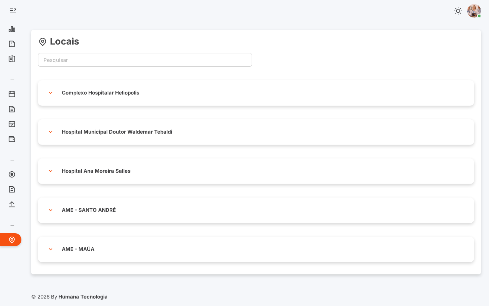
Busca por instituição
Campo de pesquisa que filtra a lista em tempo real por nome da instituição — útil para bases com muitas unidades cadastradas de diferentes regiões ou tipos.
Cards por instituição
Cada instituição em um card com nome e ações (editar/excluir). Expansão revela a lista de todos os setores vinculados com suas informações e opções de edição.
Edição inline de setores
Os setores são editados diretamente na linha da tabela sem abrir modal separado — agiliza ajustes de nomenclatura e dados dos departamentos.
Expansão de setores
Clique no card da instituição para expandir todos os setores vinculados com suas informações e opções de gestão individual.
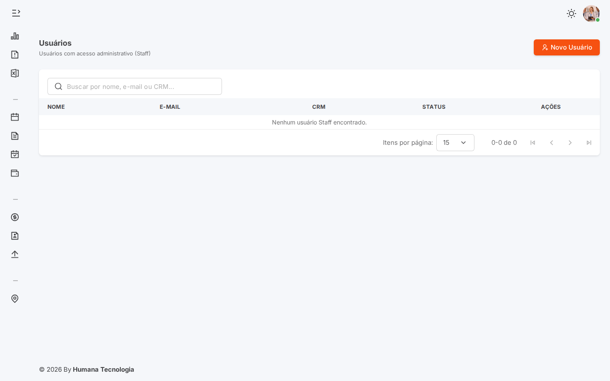
Busca multicritério
Pesquisa simultânea por nome, e-mail ou CRM em um único campo — localiza qualquer usuário independentemente da informação disponível.
Criar usuário
Modal completo: nome, sobrenome, e-mail, CPF, senha inicial, CRM (quando aplicável), telefone e tipo de pessoa (Física ou Jurídica). Validações em todos os campos obrigatórios.
Ativar / Inativar
Toggle de status com diálogo de confirmação antes de aplicar — evita remoção acidental de acessos ativos e garante que o gestor esteja ciente do impacto da ação.
Listagem gerenciável
Tabela com nome, e-mail, CRM e status de cada usuário. Ações disponíveis por linha para ajustes rápidos sem precisar acessar telas separadas.
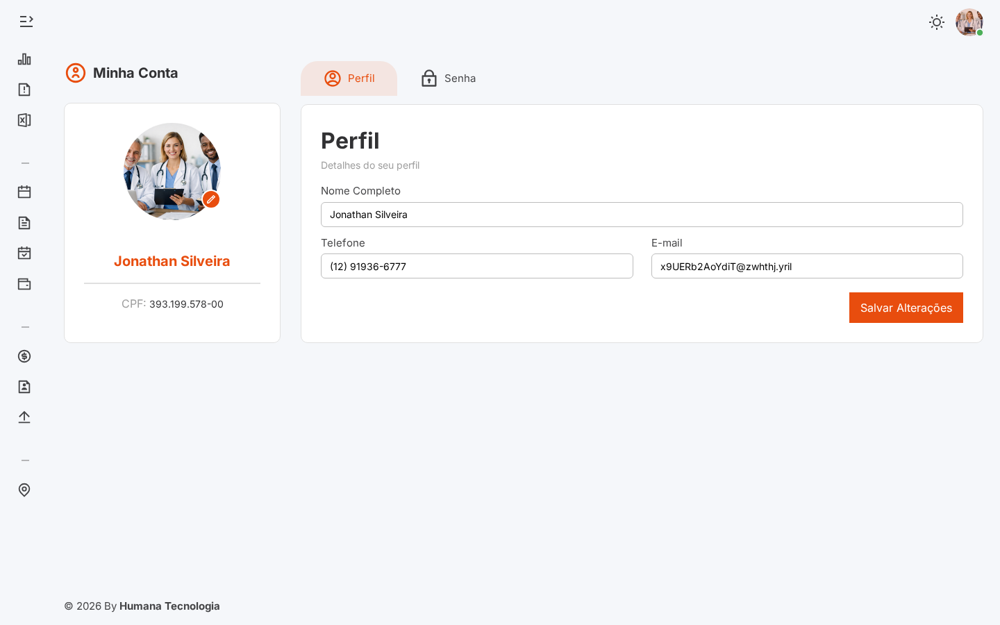
Foto de perfil
Upload com pré-visualização imediata. A foto é exibida no menu de todas as telas após salvar — personalizando a experiência e facilitando a identificação do usuário logado.
Dados de contato
Edição de nome completo, telefone (máscara + validação) e e-mail. Cada alteração é salva individualmente com confirmação visual de sucesso.
Alteração de senha
Fluxo com três campos: senha atual (confirma identidade), nova senha e confirmação. Impede a troca sem a senha correta atual.
Indicadores de senha em tempo real
Quatro critérios com indicadores visuais (vermelho → verde): 8+ caracteres, letras, números e caracteres especiais — cada um atualiza conforme o usuário digita.
Toggle de visibilidade
Ícone de olho em todos os campos de senha — alterna entre ocultar e mostrar, eliminando erros por digitação invisível sem comprometer a segurança.
Filtro hierárquico global
Seleção encadeada Instituição → Setor disponível em todos os módulos. Ao selecionar a instituição, apenas os setores vinculados são listados — elimina erros de seleção.
Competência como contexto
O seletor de mês/ano controla todos os dados da tela. Alterar a competência atualiza cards, tabelas e gráficos simultaneamente — sem recarregar a página.
Código de cores padronizado
Verde = Pago/Ativo · Ciano = Liberado · Laranja = Pendente/Planejado · Vermelho = Erro/Inativo · Azul = Informação. Consistente em todos os módulos.
Notificações de feedback
Toasts automáticos de sucesso e erro após cada ação (salvar, criar, excluir, importar). O usuário sempre sabe o resultado de cada operação sem verificação manual.
Design responsivo
Interface adaptada a desktop, tablet e mobile com Vuetify 3. Layouts ajustam colunas e tamanhos automaticamente para qualquer resolução de tela.
Máscaras automáticas
CPF, CNPJ, CEP, telefone, valores monetários e datas formatados enquanto o usuário digita — previne erros de formato sem exigir atenção extra.
Confirmação em ações destrutivas
Exclusões, inativações e fechamentos sempre exigem confirmação em modal antes de executar — protege contra cliques acidentais em ações irreversíveis.
JWT + controle de permissões (CASL)
Autenticação sem estado com tokens seguros. Permissões por perfil controlam o que cada tipo de usuário pode ver e executar na plataforma.
Armazenamento cloud seguro
Arquivos e documentos em AWS S3 com acesso via URL assinada de tempo limitado — nunca expostos diretamente ao navegador, mesmo que a URL seja compartilhada.
Estados de carregamento
Indicadores visuais de loading em todas as operações assíncronas — o usuário sabe que o sistema está processando sem ficar em dúvida se travou.
Limpar filtros com 1 clique
Botão de reset em todas as telas com filtros — retorna ao estado padrão de uma vez, sem precisar limpar campo por campo manualmente.
Paginação configurável
Seletor de 5/10/20/50 itens por página com indicador "1-10 de 347" e navegação por botões — controla a carga de dados conforme a necessidade do usuário.